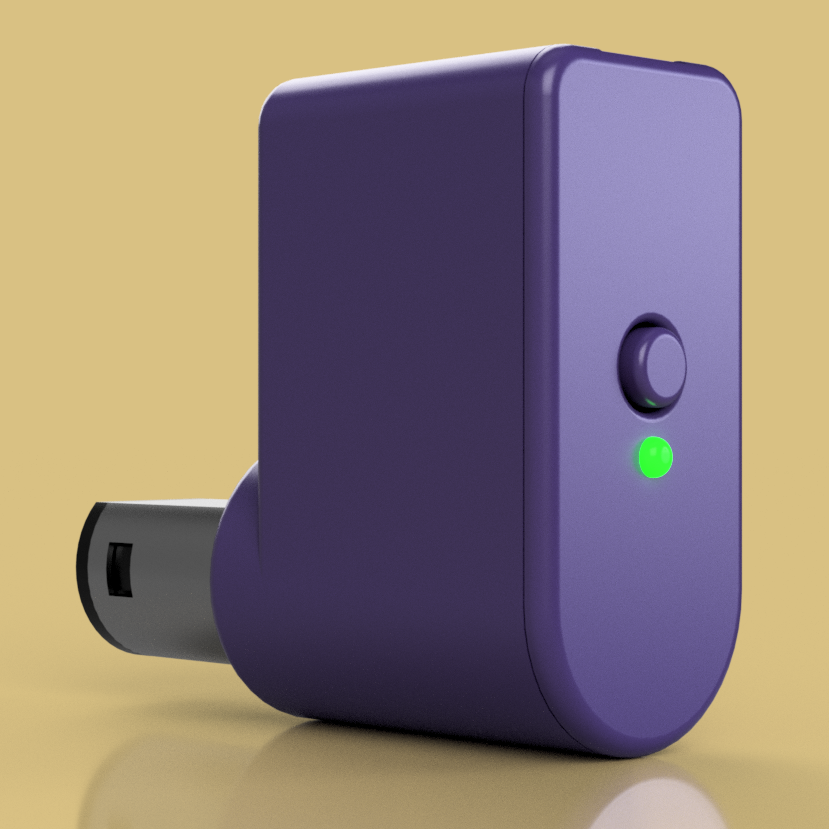
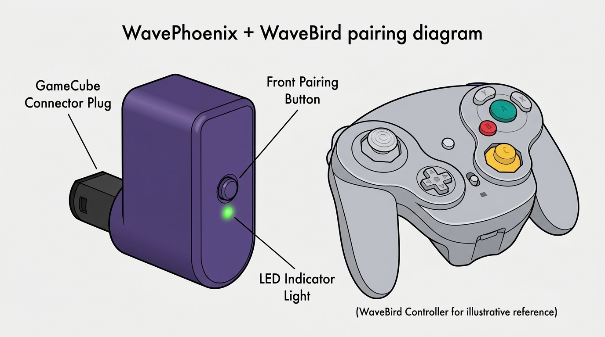
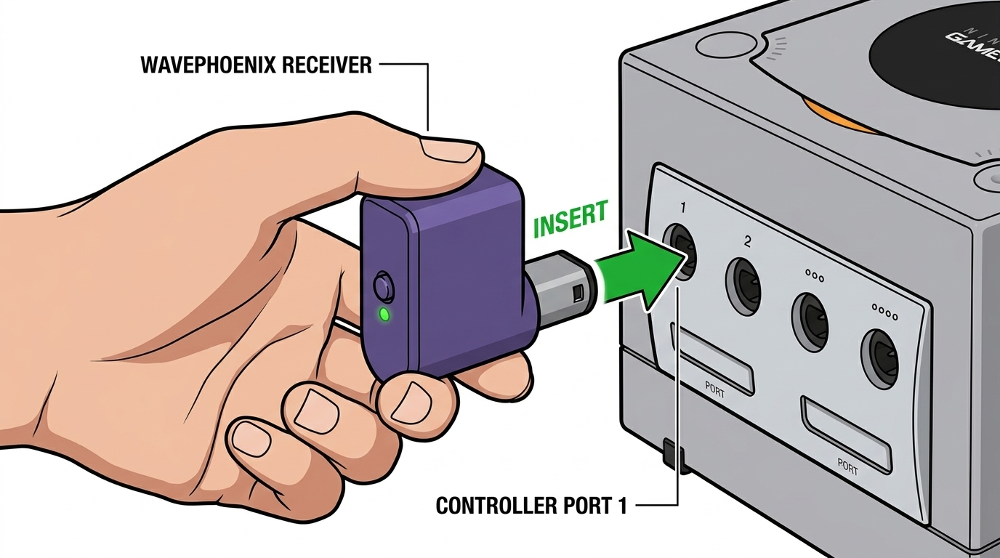
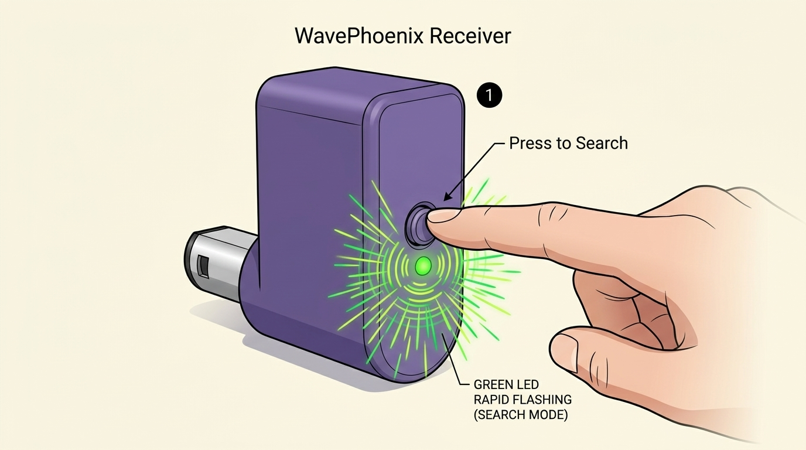
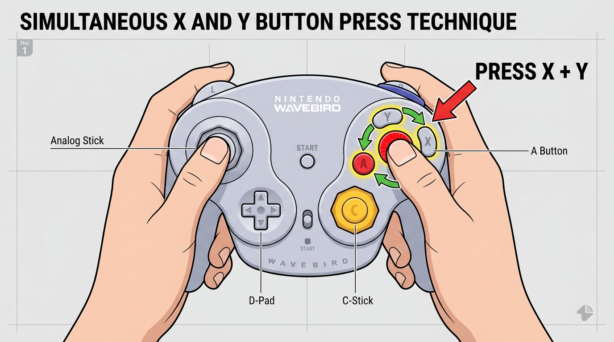
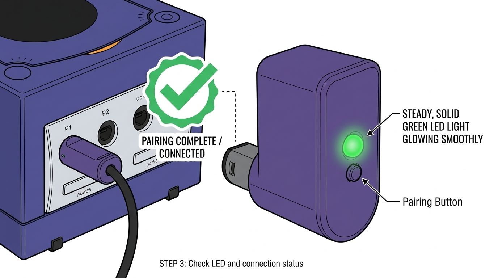

A modern, drop-in replacement for the Nintendo WaveBird RF receiver created by James Smith (loopj). Feature-packed with Virtual Pairing, LED Link Status, and Bluetooth Firmware Updates.

Say goodbye to hard-to-find, expensive original WaveBird dongles. The WavePhoenix fits directly into any GameCube controller port and pairs in seconds with your original WaveBird controller.

Follow these 4 simple steps to connect your WaveBird to the WavePhoenix receiver.
Insert your WavePhoenix receiver module firmly into Controller Port 1 (or Ports 2–4 for additional players) on your GameCube, Wii, or USB Adapter.

Press the circular button on the front face of your WavePhoenix receiver. The green LED light right below the button will start flashing rapidly.

Slide the power switch on your WaveBird controller to the ON position. Press and hold both the X and Y buttons simultaneously for 1–2 seconds.

Once paired, the LED light on the front of the WavePhoenix receiver will stop flashing and turn Solid Green. You are ready to play!

Comparison of features between OEM Nintendo receiver and WavePhoenix.
| Feature | Original Nintendo WaveBird Receiver | WavePhoenix Receiver |
|---|---|---|
| Pairing System | Manual Channel Wheel (1–16) | Virtual Pairing (One-Touch Button) |
| Status Indicator | Power / Link LED | Multi-Color Status LED |
| Firmware Upgrades | Not Possible (Fixed HW) | Bluetooth / OTA Updates |
| Availability | Discontinued & Rare | Open-Source (DIY & Pre-Assembled) |
Quick fixes for common connectivity questions.
X + Y signal. Make sure your WaveBird power switch is set to ON, press the front pairing button on WavePhoenix again, and hold X + Y for 2 seconds.
X + Y procedure.